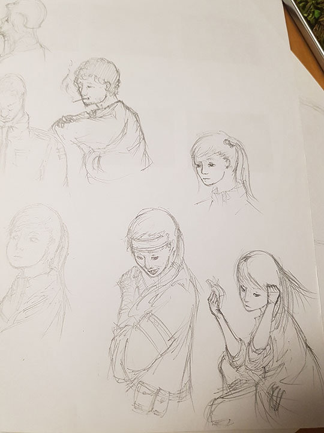
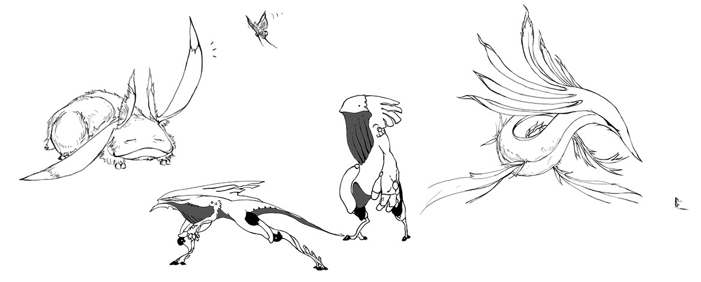
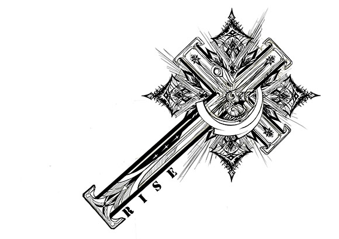
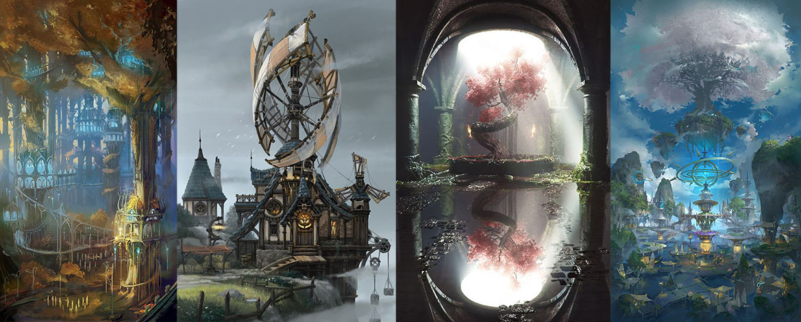

언젠간 내가 여태까지 연재한 기나긴 이야기에 아주 멋들어진 종지부를 찍은 후 편안한 소파 위에 앉아 한 장면씩 넘겨 보며 그때의 추억을 되돌아보는 꿈을…이라는 건 막연한 희망사항에 불구하고 실제로 만화나 영화, 게임 등의 매체에서 나오는 것과 같이 나도 나만의 이야기를 만들어 언젠가는 사람들에게 보여주고 싶다는 소망이 있었다.
하지만 천부적인 재능은 없던 것인지
평범한건 싫다! 이거 신선한데?라는 느낌의 내용을 구상하려 해도 내 기대치를 만족할만한 건 머릿속에서 전혀 나오지 않았다. 특히 예전에 썼던 이야기들이나 기록들을 보면 어디선가 들어본듯한 스토리 구조나 소재 등을 적지 않게 찾아볼 수 있었다.
그렇게 고민에 빠져있던 도중, 의외의 계기로부터이 이야기의 시작을 써내려갈 수 있었다.
스토리는? 꿈 일기로!
꿈이라 해도 평범한 것이 아닌 평소와는 다른 꿈을 꾸게 된 것은 고등학교 시절. 그때부터 난 그 꿈들을 기록하기 시작했고 이를 지금까지 꾸준하게 이어온 결과 꽤나 많은 자료들을 모을 수 있었다. 그리고 이러한 꿈들을 토대로 난 내가 그토록 원했던 색다른 이야기를 만들 수 있었다. 인상깊었던 점이라면 꿈들의 내용이 내가 현실을 살아가며 겪었던 일상과는 거리가 멀었다는 것이었다. 까마득한 우주 한복판에서 별과 행성들 사이를 뛰어다니거나, 위아래가 뒤바뀐 오래된 신전의 내부를 탐험하거나, 사람과는 동떨어진 모습을 한 신비로운 생명체들을 만나며 내일은 또 어떤 꿈을 꿀 수 있을까 하며 기대를 하곤 했다.
이번에 그리고 있는 만화와 관련된 꿈들을 기록하고 부가적인 설명과 이야기를 추가한 자료들. 때론 기억이 나지 않는 부분도 있어 가끔씩 다시 읽어보곤 한다.
스토리가 이뤄지는 무대 세계관, 디테일이 중요!
세계관은 내가 전하고자 하는 이야기의 주 무대가 되는 곳이다.
이는 말하고자 하는 내용을 효율적으로 전달하기 위해 뒷받침되는 요소이며,이야기의 흐름과 맥락, 전체적인 분위기를 잡아주는 아주 중요한 장치이기 때문에 난 세계관을 만드는데 있어 가장 많은 주의와 시간을 들였다. 비록 큰 틀은 앞서 말한 꿈에서 그 영감을 받아 시작했지만, 그 이후에 하나의 이야기라는 것으로 인식되도록 세계관을 통일시키는 것과 마치 하나의 정교한 기계처럼 이상한 점 없이 잘 돌아가도록 뼈와 살을 붙이는 건 이야기에 흥미와 몰입감을 유발하고 싶다면 반드시 해야만 하는 것 중 하나이다.
당장 세계적으로 유명한 작품들을 살펴본다면(예를 들어, 해리포터 시리즈나 스타워즈, 스타트랙 시리즈 등) 아무리 소재나 스토리가 좋다고 해도 그 이야기가 펼쳐질 무대가 준비되어 있지 않다면 우린 그린스크린만을 배경으로 둔 영화들을 보고 있을지도 모른다.
세계관 설정의 흔적들...이러한 글들을 쓰면서 종이와 키스할 정도로 가까워졌다.
캐릭터 설정 꾸준한 연습과 다양성
만화를 포함한 여느 매체에서 다루는 캐릭터라는 존재는 인간만을 두고 얘기하는 것이 아니다. 각종 상상동물을 포함해 때론 무기물도 이야기의 주인공이 되기도 하며, 심지어 우리의 인식 밖의 존재, 가령 신과 같은 종류도 거론된다.
하지만 만화를 읽는이는 주로 인간이 될 것이기에(만화를 개미들에게 던져주고 읽게 하진 않을 거다) 주인공이나 등장인물들을 어느 정도 인간으로 설정하는 것이 만화를 읽기에도 편하고 좀 더 와닿게 된다. 때문에 나 또한 사람을 그리게 됐지만, 그림에 특출난 재능이 없던 난 이런저런 어려움을 많이 겪었다.

중3, 고1때의 인물 그림들...처참하다...
그러다 이럴 수 없다며 그림 실력을 올리기 위해 끊임없이 노력해 이젠 어느 정도 자신감이 붙기 시작했다. 특히 사람 얼굴은 개인적으로 그리기 어려웠던 것 중 하나로 계속된 보고 그리는 방식의 연습을 계속했으며 후엔 인체 해부도, 크로키 등의 연습도 이어나간 결과...
이렇게! 예전보단 나아진 모습으로 거듭날 수 있었다.
사람 외의 등장인물들 또한 스토리의 어엿한 캐릭터들인데, 개인적으로 사람보다 더 즐겨 그리는 캐릭터들이다.
사람의 경우 어느 정도 사람답게 그려야 하지만(우리가 거북이를 보고 사람이라 하지 않는 것처럼) 그렇지 않을 경우 그 가능성이 무한대로 뻗어나가기 때문이다. 여기서 앞서 언급한 다양성을 치대한 많이 주고자 할 때 개인적으로 애용하는 방법이 하나 있다. 바로 세분화이다.
간단한 예시로 여러 매체에서 자주 등장하는 흡혈귀를 들어 보자. 그리고 먼저 흡혈귀 하면 떠오르는 보편적인 특징들을 나열해 본다. 수명이 길다, 야행성이다, 태양빛에 약하다, 피를 마신다, 박쥐, 늑대와 같은 동물들을 연상캐 한다, 신체 능력이 사람보다 우월하다 등 이런 식으로 쭉 적어본다. 이렇게 최대한 세부적으로 다가간 후 해당 특징들을 하나씩 바꿔본다. 예를 들어 태양빛보단 불 자체에 약하다거나, 피 대신 나무 수액을 마시고, 인간을 닮으면서도 좀 더 거대한 신체를 가지며, 야행성을 떠나 신체가 공기 중에 노출되면 안되는 특징으로 얼굴마저 가면으로 덮은 형상 등으로 바꿔보는 것이다.
이런 식으로 계속 한다면 분명 우리가 잘 아는 흡혈귀에서부터 시작했는데 그 결과는 전혀 새로운 무언가에 도달할 수 있다. 때문에 새로이 연상되는 특징들은 굳이 원래 생각했던 대상의 특징들과 연관되거나 비슷한 것보다는 엉뚱하고 전혀 관련이 없는 것일수록 좋다.

다양한 모습의 크리쳐 그림. 형태 또한 위에서 말한 특징과 마찬가지로 이것저것 섞어보는 것도 도움이 된다.

이런 식으로 장식적인 요소를 그리는 것 또한 좋아한다.
꿈 없이는 빈 껍질? 나마의 아이디어 뱅크!
분명 꿈을 통해 좋은 아이디어를 얻는 것은 사실이지만, 그것 하나만으로는 부족한 느낌이 적지 않아 있다. 내가 원하는 꿈을 언제 어디서든 꾸는 것도 아니고, 그런 우연이 계속된다는 보장도 없기 때문에 굳이 꿈이 아니더라도 아이디어를 얻을 만한 곳을 찾아야만 했고, 그저 주변을 둘러보는 것만으로도 그리 어렵지 않게 찾을 수 있었다.
그러나 역시 중요한 것이라 한다면 폭넓은 사고와 경험이라고 할 수 있다. 너무 한곳에만 몰두하게 되면 재미나 다양성을 잃을 수 있으며, 경험의 경우 아는 만큼 보인다고 할 만큼 아이디어를 내는데 있어서는 중요한 요소이다. 개인적으로 기괴하거나 새로운 생물체들을 그리기 위한 아이디어를 생각할 때는 물감을 묻힌 팔레트를 꺼내 그 위로 번지는 물감의 모양을 보고 그리기도 한다.

생각이 잘 나지 않을 때는 다른 사람들의 그림을 보며 새로운 아이디어를 떠올리곤 한다.
연재를 생각하며...
언젠가는 연재를 계획 중이지만 당분간은 확답을 못할것 같다. 실제로 연재를 하고 있는 몇몇의 작가분들에게 여쭤본 결과, 연재를 하게 된다면 뭐니뭐니해도 시간을 엄수하는 것이 가장 큰 요인이자, 대부분의 사람들이 딜레마에 빠지는 가장 큰 이유이다.
만화의 한 컷을 그리는데 들어가는 시간을 잘 배분해야 하며, 때론 자신의 원래의 그림 실력이나 스타일을 바꾸게 되는 결과를 가져오기도 한다.
예를 들어, 위와 같은 그림으로 매 컷을 채운다고 한다면 몇 화만에 병원으로 실려가는 모습을 볼 수 있을 것이다. (그만큼 힘들다ㅠㅠ)
하지만 그림을 완성했을 때와 마찬가지로 한 화씩, 조금씩 조금씩 만들어져가는 내 이야기를 보게 된다면 그때의 감정은 그 어떤 때와도 비교할 수 없을 것이다.